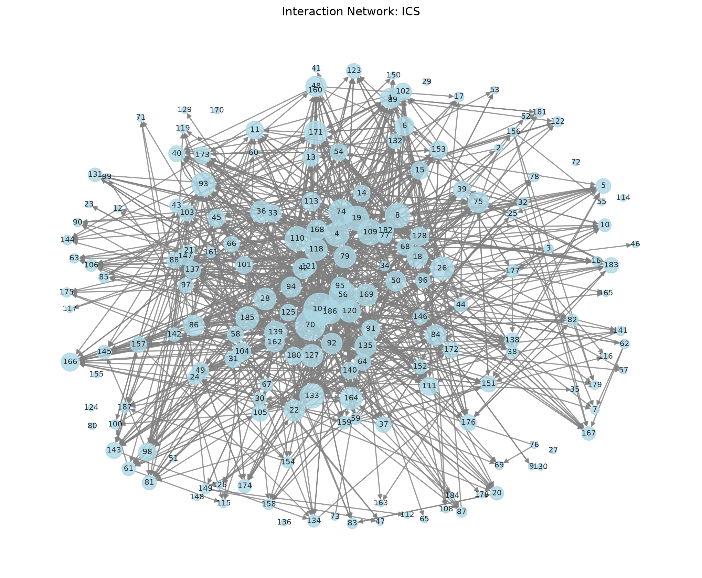
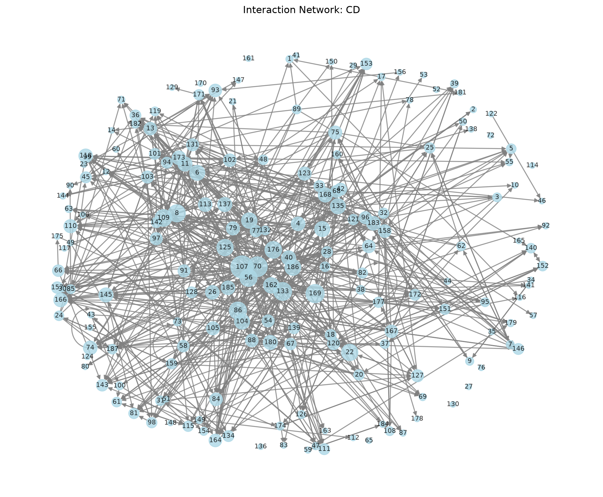
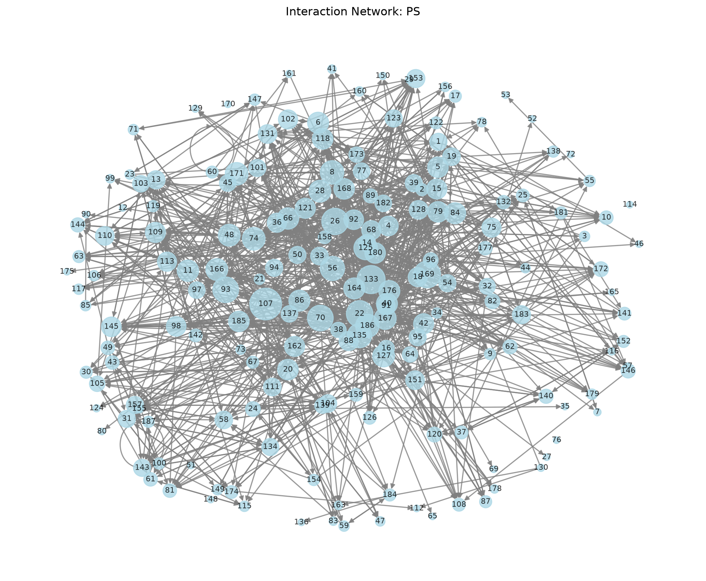
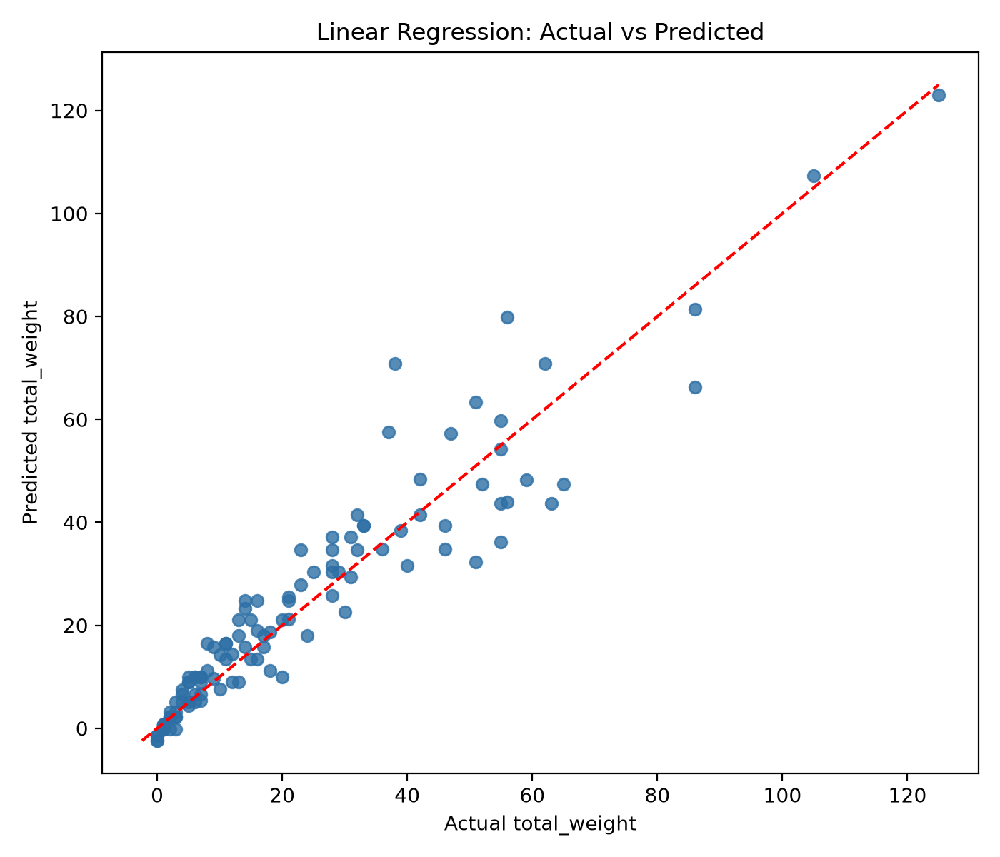
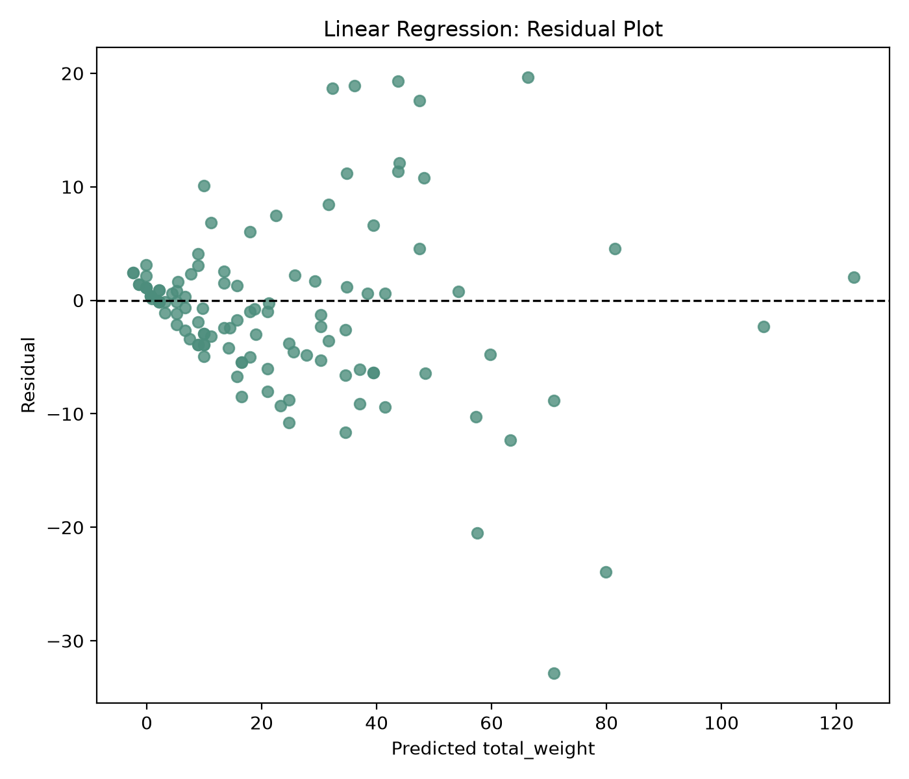
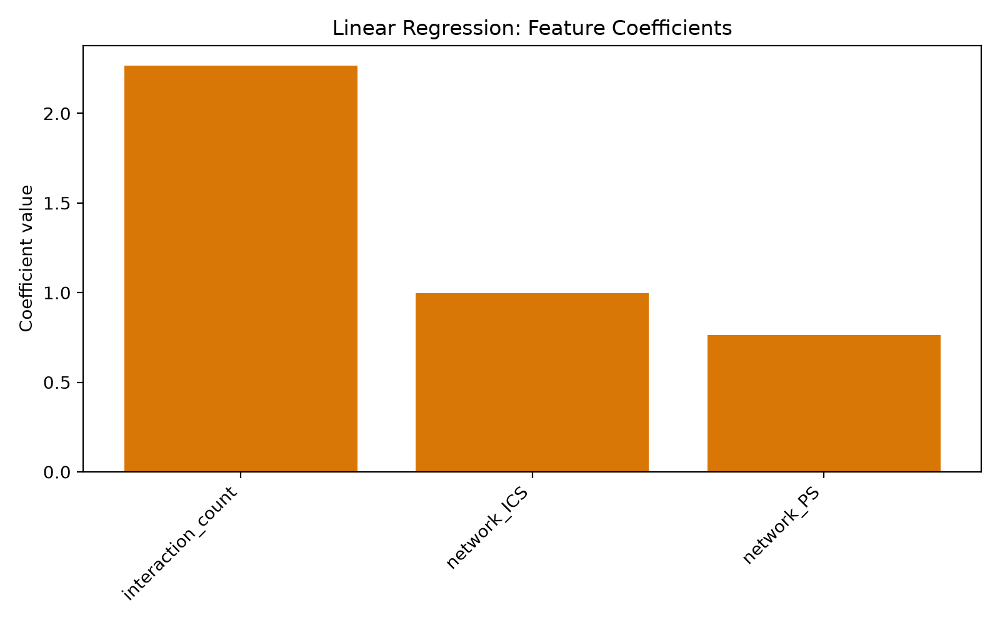
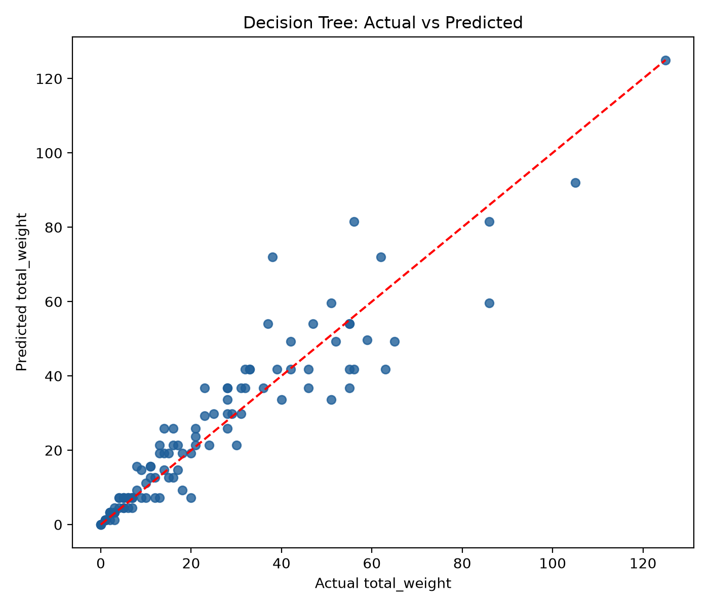
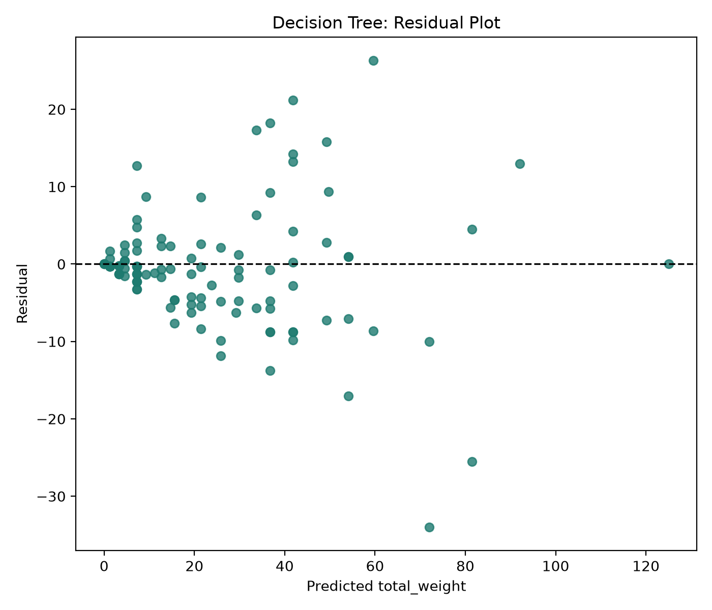
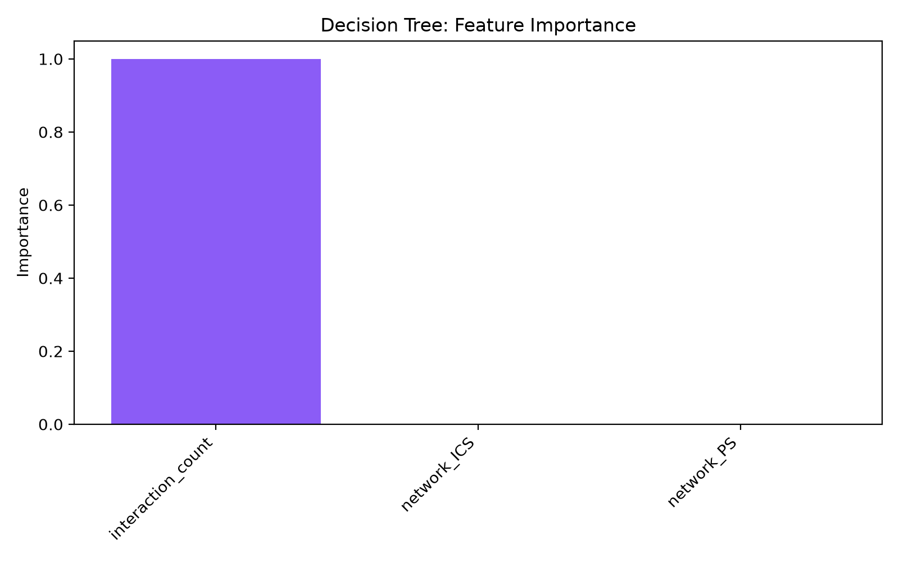

Online Learning Platform Interaction Analysis
A simple graph-based study of student activity, interaction strength, and network structure across three learning groups: ICS, CD, and PS.
This project studies student interaction patterns, identifies the most active and isolated users, and compares two machine learning models to predict interaction strength.
Project goal
To understand how students connect inside the platform and which students are the most active.
What is a network?
Students are shown as nodes and interactions as links between them.
What was found?
Most active students, isolated students, and comparison across the three networks.
Interaction Networks
ICS Network

CD Network

PS Network

Key Results
CD
735 interactions
1457 total weightICS
1148 interactions
2446 total weightPS
1258 interactions
2653 total weightMost Active Students
| Network | Student | Interactions | Weight |
|---|---|---|---|
| ICS | S107 | 57 | 125 |
| PS | S107 | 55 | 125 |
| ICS | S70 | 48 | 105 |
| PS | S133 | 43 | 92 |
Isolated Students
Students with no interactions appear as isolated network nodes. These were identified in the dataset analysis.
Output Files
ML Results
Linear Regression
This model predicts the total interaction weight of each student using features such as the number of interactions and the network type. It learns the relationship between these features and the target value total_weight.



Training flow
Decision Tree
This model also predicts a student’s total interaction weight, but it learns a decision-based pattern instead of a straight-line equation. It is useful for capturing non-linear relationships between student activity and network behavior.



Training flow
Model Conclusion
Linear Regression performed slightly better than Decision Tree on this dataset. It achieved a higher R² value and lower RMSE, which means it explained the relationship between student activity and total interaction weight more effectively.
| Model | MAE | RMSE | R² |
|---|---|---|---|
| Linear Regression | 5.1483 | 7.6487 | 0.8930 |
| Decision Tree | 5.0199 | 7.8983 | 0.8859 |
Overall, Linear Regression is the better-performing model for predicting total interaction weight in this dataset.